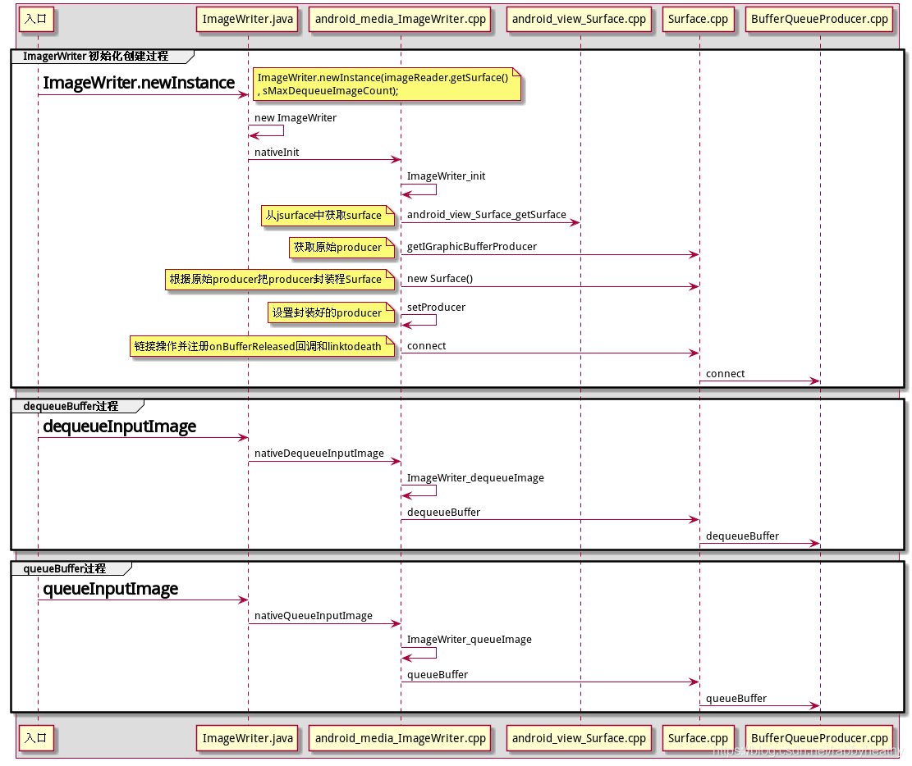

BufferQueue详解
BufferQueue是Android 中所有图形处理操作的核心，是图像buffer流转重要中转站。
1 | 相关源码：frameworks/native/libs/gui/ |
BufferQueue 简介
几乎所有在Android系统中移动图形数据缓冲区的内容都依赖于BufferQueue，比如显示、编码等。
BufferQueue是典型的生产者、消费者模型，通信过程如下所示：
运行流程简单如下：
1.Dequeue buffer：图形生产者先向BufferQueue申请GraphicBuffer
2.queue buffer：填充完GraphicBuffer后，将GraphicBuffer移交给BufferQueue
3.BufferQueue会通知图形消费者有新的图形数据可以使用
4.acquire buffer：图形消费者就可以从BufferQueue取出GraphicBuffer
5.release buffer：使用完之后放回到BufferQueue以便循环使用。
一般图形生产者和消费者是在不同进程中，BufferQueue采用了binder和共享内存机制，因此可以高效地在进程间传递图形数据。
BufferQueue与Camera的关系
在实际Camera开发过程中，经常会与surface，ImageReader，ImageWriter等打交道。当Camera APP向Framework发送一个request，请求一帧图像数据时，就是通过surface/ImageReader来接收图像数据的，这期间buffer的流转就是通过BufferQueue来实现的。实际上Surface，ImageReader，ImageWriter是对BufferQueue的生产者消费者的封装，其核心实现还是BufferQueue。
而BufferQueue是一个生产者消费者模型又是GraphicBuffer管理者，它和显示系统以及Camera流媒体紧密关系着。所以要了解Camera数据如何流转的，绕不开BufferQueue，要了解BufferQueue 就要先了解生产者消费者模型。
下面就从生产者消费者模型开始，深入浅出的讲解一下BufferQueue。
生产者消费者模型
1.生产者消费者模型基本原理
在生产者消费者模型中，存在生产者和消费者两种角色，它们通过内存缓冲区进行通信，生产者生产消费者需要的数据，消费者获取生产者生产的数据进行消费。
如果没有生产者消费者模型，那么生产者和消费者是直接调用关系，生产速度的和消费速度相互拖累，必须在消费完成之后才能进行下一次生产，如下图：
有了生产者和消费者模型之后，生产者生产的数据存到缓冲队列，消费者从队列中取数据去消费，互不影响，互不拖累，耦合性低。如下图:
2.生产者消费者模型的组成
总结起来生产者消费者模型由一个场所，和两个角色组成：
. 一个场所：数据缓冲区，实现内存共享和轮转。
. 两个角色： 生产者(生产线程)生产数据，消费者(消费线程)消费数据。也可以是进程间使用。
生产者和消费着之间又需要遵循三种关系和四个基本的原则：
. 三个关系：生产者和生产者互斥关系，消费者和消费者互斥关系，生产者和消费者互斥同步关系。
. 四个原则：生产者生产的时候消费者不能消费，消费者消费的时候生产者不能生产，缓冲区空时消费者不能消费，缓冲区满时生产者不能生产。
以上就可以很清晰，简单明了的解释了生产者消费者模型。那么BufferQueue是什么，怎么应用生产者-消费者模型思想的，下面详细说明。
BufferQueue基本原理
1.BufferQueue的生产消费框架
BufferQueue的核心逻辑是生产者消费者逻辑，在BufferQueue这个生产者消费者框架中， BufferQueuecore可以理解为数据缓冲区的管理者，代码逻辑在BufferQueue.cpp和BufferQueuecore.cpp中。
它的原始消费者是BufferQueueConsumer，它的原始生产者是BufferQueueProducer。
那么BufferQueue.cpp 和BufferQueuecore.cpp是什么样的关系呢，可以理解为BufferQueue是创建者，BufferQueuecore是由BufferQueue调用createBufferQueue创建的。
总的来讲 BufferQueue.cpp 主要定义了createBufferQueue接口和ProxyConsumerListener的onFrameAvailable等通知接口。
使用的时候，封装的消费者调用createBufferQueue创建BufferQueuecore，然后根据创建好的BufferQueuecore，去创建原始生产者消费者BufferQueueConsumer和BufferQueueProducer。
而消费者BufferQueueConsumer在调用connect的时候把ConsumerListener相关的回调接口注册进BufferQueue供ProxyConsumerListener回调使用。
生产者BufferQueueProducer也有一个connect接口，生产者的connect接口会注册IProducerListener到BufferQueuecore中，在消费者使用完GraphicBuffer释放的时候通过这个Listener通知生产者。
同时这个IProducerListener会注册Binder死亡通知函数，在死亡的时候回调BufferQueueProducer的binderDied，取消连接。
至此由BufferQueue BufferQueuecore，BufferQueueConsumer， BufferQueueProducer，组成的核心的生产者消费者模型就建立起来了。
这里说的是封装的消费者去创建BufferQueuecore有两点需要解释一下:
一个是消费者的封装关系，这个后面会详细说明。
另外一个就是为什么是消费者创建BufferQueuecore，而不是生产者去创建呢。
其实也是可以放到生产者中创建的，但是主要由于两点原因，正常会放在消费者中去创建：
1.出于消费者准备好消费了在去生产的思想考虑。
2.以消费者端作为核心端去管理，在消费者端创建方便统一管理。
2.BufferQueueCore概述
从BufferQueue的生产消费框架建立过程看，BufferQueueCore是核心缓冲区管理者，是由BufferQueue创建的，那么BufferQueueCore具体管理哪些事呢。
代码上看主要包含了下面这些关键参数。
可以大概划分一下：
1.slots相关，用于关联数据核心GraphicBuffer。(包括mSlots mQueue mFreeSlots mfreeBuffers mUnusedSlots,mActiveBuffers )，
2.listener相关，用于通知和回调(包括mConsumerListener mLinkedToDeath mConnectedProducerListener)，
3.Buffercount相关，用于定BufferQuue中的Buffer数量。(包括mMaxBufferCount mMaxAcquiredBufferCount mMaxDequeuedBufferCount)，
4.一些设置项(包括 mConsumerName mDefaultWidth mDefaultHeight mDefaultBufferFormat mDefaultBufferDataSpace)
设置相关主要是name 宽高信息，format信息，dataspace信息等,下面会分章节重点讲一下Slots BufferCount和 Listener。
3.BufferSlot和BufferItem详解
BufferQueueCore中管理着数据缓冲区，而数据的核心GraphicBuffer关联在BufferSlot中。
从源码中分析BufferSlot 和 GraphicBuffer的关联关系：
BufferQueueCore.h定义了:
1 | //frameworks/native/libs/gui/include/gui/BufferQueueCore.h |
SlotsType的定义如下:
1 | //frameworks/native/libs/gui/include/gui/BufferQueueDefs.h |
由此可以看出mSlots实际上是一个BufferSlot的数组。
BufferSolt中定义了一个GraphicBuffer的強指针用于关联mGraphicBuffer。
1 | //frameworks/native/libs/gui/include/gui/BufferSlot.h |
这样BufferSlot 和 GraphicBuffer 就关联上了。
BufferQueue框架中，消费者和生产者对缓冲区数据操作的单元核心就是一个BufferSlot，也就是说所有取GraphicBuffer，放GraphicBuffer的操作都是针对BufferSlot来完成的。
具体的BufferSlot是怎么取和放的呢。可以看到BufferQueueCore 中还定义了 Fifo mQueue;
1 | //frameworks/native/libs/gui/include/gui/BufferQueueCore.h |
字面上看，定义了一个先进先出的对列，那么这个队列里存放的是什么呢。
可以看到这样的定义typedef Vector Fifo; 也就是说Fifo是的向量集，里面存的是BufferItem。而 BufferItem中又定义了mslots的索引值:
1 | //frameworks/base/libs/hostgraphics/gui/BufferItem.h |
这样就可以和BufferSlot关联上了。
总结一下可以简单理解成生产者从mQueue上获取BufferItem从而找到了对应的BufferSlot，并对它完成一系列的操作之后，放回到mQueue中供消费者使用，消费者也是从mQueue上获取BufferItem从而找到对应的BufferSlot来消费，消费完成之后放回mQueue。不过需要注意实际上不是真正的把BufferSlot取出放回mQueue，而是mSlots索引值的传递过程。
BufferQueueCore 中定义的mSlots是BufferSlot数组，默认数组长度为NUM_BUFFER_SLOTS =64
1 | /frameworks/native/libs/ui/include/ui/BufferQueueDefs.h |
但是实际使用的时候64个Slots不一定全用，这里就引入了一个mUnusedSlots，mUnusedSlots只的是不被使用的BufferSlot集合，那么可用的BufferSlot 就是NUM_BUFFER_SLOTS - num(mUnusedSlots) 这么多个。
在这些可用的BufferSlot中，又会根据BufferSlot当前的状态即BufferState做区分。分为FREE状态下的BufferSlot和非FREE状态下的BufferSlot，非FREE状态下的BufferSlot集合在mActiveBuffers中。
FREE状态下的BufferSlot又会根据有没有和GraphicBuffer关联做区分。没有GraphicBuffer与之相关联的BufferSlot集合在mFreeSlots中，有GraphicBuffer与之关联的BufferSlot 集合在mFreeBuffers中。
在BufferQueueProducer和BufferQueueConsumer的生产消费的过程中，mslots中的BufferSlot会动态的在 mFreeSlots mFreeBuffers mActiveBuffers mUnusedSlots之间进行流转。
需要注意的是mSlots 是个数据结构数组，但是mFreeSlots mFreeBuffers mActiveBuffers mUnusedSlots 都不是结构数组，都是mSlots的 index值的集合(也就是mSlots的下标的集合)。
刚刚提到的BufferSlot会根据当前的状态即BufferState做区分为FREE状态的slot和非Free状态的slot。这个BufferState 就是BufferSlot流转过程中的状态。主要包含FREE DEQUEUED QUEUED ACQUIRED 四种状态。
FREE：FREE状态下的BufferSlot指的是可以被生产者dequeue或attach出来使用的BufferSlot，以及消费者消费完毕release或者detach的BufferSlot。
DEQUEUED：DEQUEUED状态的BufferSlot 是已经被生产者dequeue或attach出来供生产使用的BufferSlot。
QUEUED：QUEUED状态的BufferSlot 是生产者生产完成放回队列供消费者使用的BufferSlot。
ACQUIRED ：消费者从 BufferQueue获取准备消费的BufferSlot。
BufferState 用isFree isDequeued isQueued isAcquired 接口来判断状态，用attachProducer，detachProducer，dequeue，queue，cancel，freeQueued，acquire，release等接口来完成状态转换。
可以用下图形象的描述一下mFreeSlots mFreeBuffers mActiveBuffers mUnusedSlots 之间的关系。其中 TotalSlots 最大支持NUM_BUFFER_SLOTS = 64个，调用getMaxBufferCountLocked 获取的是可用的BufferSlot数量后面会详细介绍。
4.BufferCount详解
BufferSlot中介绍中讲到getMaxBufferCountLocked，可以获取可用的BufferSlot数量maxbuffercount，那么这个可用的数量是哪里来的呢。
消费者BufferQueueConsumer 提供了setMaxBufferCount接口来设置可用的BufferSlot数量maxbuffercount，默认是数量是NUM_BUFFER_SLOTS=64。
同时消费者BufferQueueConsumer还提供了setMaxAcquiredBufferCount 接口来设置mMaxAcquiredBufferCount，
mMaxAcquiredBufferCount 是指一次 同时能被消费者使用的最大BufferCount。
另外，生产者还提供了一个setMaxDequeuedBufferCount接口来设置mMaxDequeuedBufferCount，
mMaxDequeuedBufferCount是指一次同时能被生产者用来生产的最大BufferCount
设定完成之后BufferQueueCore 中就会有 maxBufferCount个mlots， NUM_BUFFER_SLOTS- maxBufferCount个mUnusedSlots
maxBufferCount，mMaxDequeuedBufferCount ，mMaxAcquiredBufferCount三者之间的关系如下：
1 | maxbuffercount = mMaxDequeuedBufferCount + mMaxAcquiredBufferCount |
BufferQueue中的生产者和消费者详解
1.BufferQueue中的生产者和消费者概述
上面讲了BufferQueue创建了BufferQueueCore，然后根据BufferQueueCore创建了消费者BufferQueueConsumer和生产者BufferQueueProducer，并详细介绍了数据缓存管理区BufferQueueCore，下面重点介绍一下消费者BufferQueueConsumer和生产者BufferQueueProducer。
先介绍一下BufferQueueConsumer和BufferQueueProducer的继承关系和关键方法，然后针对关键函数展开介绍一下BufferQueueConsumer和BufferQueueProducer的工作原理，和流转过程。
BufferQueueConsumer 和 BufferQueueProducer 分别对应文件BufferQueueConsumer.cpp 和 BufferQueueProducer.cpp 和 BufferQueueCore.cpp 在同级目录都在/frameworks/native/libs/gui目录下。
下面是这两个类的继承关系和重要函数：
生产者继承关系:
1 | //frameworks/native/libs/gui/include/gui/BufferQueueProducer.h |
1 | BnGraphicBufferProducer: IGraphicBufferProducer |
可以看到BufferQueueProducer继承了BnGraphicBufferProducer而BnGraphicBufferProducer又继承了IGraphicBufferProducer，来完成主要的BufferSlot的流转操作，也提供了远程代理接口，实现跨进程binder调用。
同时BufferQueueProducer还继承了DeathRecipient 用来处理Binder死亡通知。
生产者关键方法:
requestBuffer 获取对应BufferSlot的GraphicBuffer地址。
setMaxDequeuedBufferCount 设置最大同时可以dequeue出来的的BufferSlot数量。
dequeueBuffer 从FREE状态下的BufferSlots中队列中获取空闲的BufferSlot做生产使用，优先从mFreeBuffers中获取，如果没有则从mFreeSlots中获取。
attachBuffer 绑定已经分配好的GraphicBuffer到FREE状态下的BufferSlot中，优先从mFreeSlots中查找BufferSlot，如果没有则从mFreeBuffers中查找并绑定。
queueBuffer 生产者把生产好的BufferSlot放到队列中供消费者使用。
detachBuffer 把attachBuffer了GraphicBuffer的 Active状态下的BufferSlot的放到mFreeBuffers之后直接取消GraphicBuffer的绑定。
detachNextBuffer 把需要释放的BufferSlot中的GraphicBuffer指针赋值到outBuffer输出之后，把BufferSlot的放到mFreeBuffers并解绑定GraphicBuffer。
cancelBuffer 把BufferSlot放回到mfreeBuffers中，不会释放graphicbuffer。
connect 生产者通过该接口把IProducerListener注册到BufferQueueCore中供消费者回调，同时建立了Binder死亡通知通路。
disconnect断开BufferQueueProducer和BufferQueueCore之间建立的链接关系。
消费者继承关系:
(BufferQueueConsumer.cpp) BufferQueueConsumer:BnGraphicBufferConsumer
BnGraphicBufferConsumer:IGraphicBufferConsumer
可以看到BufferQueueConsumer的实现结构和BufferQueueProducer很相似继承了BnGraphicBufferConsumer 而BnGraphicBufferConsumer又最终继承了IGraphicBufferConsumer，来完成主要的BufferSlot的流转操作，也提供了远程代理接口，实现跨进程binder调用。
消费者关键方法:
acquireBuffer 获取QUEUE状态下的BufferSlot进行消费。
releaseBuffer消费完成之后把BufferSlot放回mFreeBuffers队列中。
attachBuffer 把消费者的GraphicBuffer绑定到BufferSlot上使用。
detachBuffer把消费者的GraphicBuffer从BufferSlot上解绑。
setMaxBufferCount 设置最大可用BufferSlot数量。
setMaxAcquiredBufferCount 设置最大同时可以acquire的BufferSlot数量。
connect 建立消费者和BufferQueueCore之间的链接，注册IConsumerListener回调。
disconnect 销毁消费者和BufferQueue之间的链接。
2.BufferQueueConsumer关键流程分析
(1). acquirebuffer的流程
主要流程是首先判断AcquireBuffers是否已经超过最大一次能够Acquire的数量，mQueue是否为空，然后从mQueue中获取第一个迭代器赋值给outBuffer输出，同时把mBufferState状态改为Acquired 并从mQueue中移除
1 | status_t BufferQueueConsumer::acquireBuffer(BufferItem* outBuffer, |
(2). releasebuffer的流程
releasebuffer主要流程是先做slot frameNumber 以及 BufferState有效性检查，修改mBufferState状态成FREE状态。然后把对应的slot从mActiveBuffers中移除并放回mFreeBuffers的过程。
这个过程中不做GraphicBuffer和BufferSlot的解绑定操作，也就是说GraphicBuffer不会被释放。详细流程如下面的代码。
1 | status_t BufferQueueConsumer::releaseBuffer(int slot, uint64_t frameNumber, |
3.BufferQueueProducer关键流程分析
(1). dequeuebuffer的流程
dequeuebuffer是生产者端从BufferQueueCore上获取一个GraphicBuffer进行生产的过程，生产者BufferQueueProducer 会在去获取一个FREE状态的的BufferSlot。
同时把mBufferState状态修改成Dequeue状态，把BufferSlot放到mActiveBuffers中管理。也由此可见GraphicBuffer是在这里实际创建的。
下面是dequeueBuffer的具体流程：
1 | status_t BufferQueueProducer::dequeueBuffer(int* outSlot, sp<android::Fence>* outFence, |
FREE状态的BufferSlot又包含了mFreeSlots和mFreebuffers两组slots，dequeue的时候会先从mFreebuffers查找如果有可用的就使用，如果没有就从mFreeSlots获取BufferSlot并分配GraphicBuffer。
这个过程在waitForFreeSlotThenRelock中实现
下面是waitForFreeSlotThenRelock的流程：
1 | status_t BufferQueueProducer::waitForFreeSlotThenRelock(FreeSlotCaller caller, |
(2). attachbuffer的流程
正如上面的waitForFreeSlotThenRelock流程，attachBuffer也是从FREE状态的slots上获取BufferSlot，但是和dequeueBuffer不同attachBuffer是优先从mfreeslots上获取，如果mfreeslots没有，在从mfreebuffers上获取。
waitForFreeSlotThenRelock获取到BufferSlot之后，再把已有的申请好的GraphicBuffer绑定到这个BufferSlot上。同时把mBufferState状态修改成Dequeued状态。把BufferSlot放到mActiveBuffers中管理。
具体流程如下：
1 | status_t BufferQueueProducer::attachBuffer(int* outSlot, |
(3). queuebuffer的流程
queuebuffer是生产者完成对GraphicBuffer的处理之后调用queuebuffer把GraphicBuffer放回mQueue的操作，同时把mBufferState修改成QUEUE状态。
具体queuebuffer流程如下：
1 | status_t BufferQueueProducer::queueBuffer(int slot, |
(4). detachBuffer的流程
detachBuffer主要是对应生产者端的attachbuffer操作，将attachbuffer之后的BufferSlot，放回到mFreeSlots中，并解除对GraphicBuffer的绑定，并通知消费者Buffer释放。
1 | status_t BufferQueueProducer::detachBuffer(int slot) { |
BufferQueue的完整生产消费体系
1.BufferQueue的生产消费和BufferSlot状态关系
上面分别详细介绍了BufferQueueCore BufferSlot BufferState BufferQueueConsumer BufferQueueProducer，也涉及到了部分流转关系。
这一节将用图表和文字说明详细的介绍一下 BufferQueueConsumer BufferQueueProducer 和 BufferSlot BufferState 之间的流转关系。
BufferSlot 包含了FREE DEQUEUED QUEUED ACQUIRED 这几种BufferState对应基本操作方法dequeue/queue/acquire/release的关系如下：
首先初始状态下，所有可用BufferSlot全是FREE状态，在mFreeSlots中管理。
BufferQueueProducer 发出dequeueBuffer请求会优先在mFreeSlots找的一个FREE状态的BufferSlot，后面在做dequeueBuffer的时候优先从mFreeBuffers中获取，发现没有对应的GraphicBuffer，就去申请，申请完成之后把GraphicBuffer与Slot绑定，然后把BufferSlot状态修改程Dequeue状态交由生产者生产。
生产完成之后，BufferQueueProducer 调用queueBuffer，把 BufferSlot放入队列mQueue中供消费者使用，并把BufferSlot的状态设置成QUEUE状态，并调用消费者的onFrameAvailable回调通知消费者，有可消费的BufferSlot可以消费。
消费者接到通知之后，调用acquireBuffer到mQueue队列中取出BufferSlot消费，并将BufferSlot状态修改程Acquired状态。消费完成之后调用releaseBuffer把BufferSlot放到mFreeBuffers中管理，这时不回去解绑GraphicBuffer和BufferSlot,所以GraphicBuffer不会被释放。
同时把BufferSlot状态设置为FREE状态，并调用BufferQueueProducer的回调函数通知生产者BufferSlot释放。这样就完成了一次流转。对应下图:
BufferQueue的生产消费关系还有另外一种使用方法。下面是这种操作方法attachbuffer/detachbuffer/cancelbuffer和状态的关系图：
同样首先初始状态下，所有可用BufferSlot全是FREE状态，在mFreeSlots中管理。
BufferQueueProducer调用attachBuffer 首先优先从mFreeSlots中FREE状态BufferSlot，如果mFreeSlots中没有在从mFreeBuffers中获取，然后把已经分配好的GraphicBuffer关联到该BufferSlot上。
并将BufferSlot状态修改成DEQUEUED 这里和dequeueBuffer方式不同，dequeueBuffer是BufferQueueCore负责申请管理GraphicBuffer，而attachBuffer是把申请好的GraphicBuffer关联到BufferQueueCore上。
然后BufferQueueProducer 调用queueBuffer，把 BufferSlot放入队列mQueue中供消费者使用，并把BufferSlot的状态设置成QUEUE状态，并调用消费者的onFrameAvailable回调通知消费者消费。
消费者接到通知之后，调用acquireBuffer到mQueue队列中取出BufferSlot消费，并将BufferSlot状态修改程Acquired状态。消费完成之后调用releaseBuffer把BufferSlot放到mFreeBuffers中管理，并调用BufferQueueProducer的回调函数通知生产者调用detachBuffer释放GrphicBuffer。这里也可以调用消费者的dettachBuffer完成释放。
2.BufferQueue的封装关系
BufferQueue的代码在/frameworks/native/libs/gui中，主要有BufferQueue.cpp BufferQueueCore.cpp BufferQueueProducer.cpp BufferQueueConsumer.cpp 这几个文件前面已经详细介绍过了，BufferQueue框架中的核心实现文件。
IConsumerListener.cpp IProducerListener.cpp 是生产者消费者相关的回调接口文件。
IGraphicBufferProducer.cpp IGraphicBufferConsumer.cpp 为BufferQueueProducer 和BufferQueueConsumer 提供接口，实现跨进程访问。
BufferItemConsumer.cpp CpuConsumer.cpp GLConsumer.cpp 等都继承ConsumerBase.cpp 来完成对BufferQueueConsumer的封装。
Surface.cpp SurfaceComposerClient.cpp SurfaceControl.cpp surface相关的文件是对BufferQueueProducer的封装。
我们正常使用的时候实际上是接触不到BufferQueue的，都是使用的层层封装之后的类，由此可以总结出：
BufferQueue的消费者是层层封装的，核心实现是BufferQueueConsumer。
BufferItemConsumer是对BufferQueueConsumer的封装，ImageReader又是对BufferItemConsumer的封装，BufferQueueConsumer BufferItemConsumer ImageReader都是消费者。
BufferQueue的生产者也是层层封装的，核心实现是BufferQueueProducer。
Surface 是对BufferQueueProducer的封装，ImageWriter又是对Surface的封装。BufferQueueProducer，Surface ，BufferQueueProducer 都是生产者。
每次封装都是有目的，都是为了实现某种特殊的功能。
3.BufferQueue的使用模型
BufferQueue 有两种使用方式：
一种是生产者dequeue buffer用来生产，生产完成之后调用queueBuffer把GraphicBuffer放回BufferQueue并通过回调通知消费者使用，消费者调用acquireBuffer 获取GraphicBuffer进行消费，消费完成之后调用releaseBuffer 把GraphicBuffer放回BufferQueue，并通知生产者detachBuffer。
另一种是生产者调用attachBuffer，获取BufferQueue上的一个freeSlot，并将已经分配好的GraphicBuffer与之连接，然后调用queueBuffer放回到BufferQueue上，并通知消费者消费，消费者调用acquireBuffer获取GraphicBuffer进行消费，消费完成之后调用releaseBuffer 把GraphicBuffer放回BufferQueue，并通知生产者detachBuffer。消费完成之后，消费者也可以调用detachBuffer进行释放GraphicBuffer。
BufferQueue在java层的应用
1.ImageReader消费者关系
(1). ImageReader基本概念
ImageReader是消费者，消费者承担创建BufferQueue的责任。所以在ImageReader初始化的时候创建了BufferQueue以及最原始的生产者BufferQueueProducer和消费者BufferItemConsumer。Camera APP获取FrameWork的拍照数据一般就是通过ImageReader来获取的。
ImageReader工作的时候调用acquireNextImage 经过层层调用获取到BufferQueue中的GraphicBuffer来使用，并将状态改成aquired状态。使用完成之后调用releaseBuffer接口放回到mFreeBuffers队列中并通知生产者释放GraphicBuffer。
(2). ImageReader的初始化
ImageReader的初始化是调用nativeInit来完成的，nativeinit调用JNI接口ImageReader_init来实现，
在ImageReader_init中会调用BufferQueue::createBufferQueue(&gbProducer, &gbConsumer);创建最原始的生产者消费者和BufferQueueCore，之后会讲原始消费者封装到BufferItemConsumer中，然后调用bufferConsumer→setFrameAvailableListener(ctx);把JNIImageReaderContext实现的回调注册到ConsumerBase中去。生产完成之后发现有可以消费的Buffer，会先触发ConsumerBase::onFrameAvailable,在ConsumerBase::onFrameAvailable中会调用setFrameAvailableListener设置下来的回调，通知ImageReader进行消费。
然后会调用ctx->setProducer(gbProducer);保存原始生产者，供后面获取并封装使用。
(3). ImageReader的acquirebuffer
ImageReader的acquireBuffer主要根据mFormat创建SurfaceImage，然后用这个SurfaceImage做为参数继续调用acquireNextSurfaceImage完成acquire操作，
acquireNextSurfaceImage调用nativeImageSetup进而调用JNI接口ImageReader_imageSetup完成acquire操作，之后把SurfaceImage存储到mAcquiredImages中保存，在Release的时候释放。
ImageReader_imageSetup 中首先调用getBufferConsumer获取BufferItemConsumer，然后获取BufferItem，接着调用bufferConsumer->acquireBuffer(buffer, 0);继续完成acquireBuffer操作。
并把获取到的BufferItem通过Image_setBufferItem接口设置到image的mNativeBuffer属性中去
acquireBuffer调用ConsumerBase::acquireBufferLocked来完成item的填充，然后用mSlots[item->mSlot].mGraphicBuffer给item→mGraphicBuffer赋值。
acquireBufferLocked则又是调用mConsumer->acquireBuffer完成的，acquireBuffer流程上面已经分析过了，负责获取对应的BufferItem输出。
1 | frameworks/base/media/java/android/media/ImageReader.java |
(4). ImageReader的release
使用graphicbuffer完成之后的释放需要注意一下：
消费者的最原始的buffer释放流程(BufferItemConsumer中的流程)应该是使用完成之后先调用releasebuffer将mlots 置位成FREE状态，link到mFreeBuffers中，
此时GraphicBuffer还是link在mSlots中，但是处于可用状态。在这个时候需要调用discardFreeBuffers来解除GraphicBuffer和mSlots link关系，
然后把mSlots标志成mFreeSlots状态完成释放。但是实际释放过程没有这么简单，ImageReader封装了releaseBuffer接口成releaseImage，但是这个接口是私有的，不能被公开调用。
ImageReader还封装了一个close接口，close接口完成了release操作，但是同时也清理掉了ImageReader消费者本身。
那么如何去释放呢，发现ImageReader的创建的SurfaceImage可以通过acquireNextImage获取，而SurfaceImage中有close方法，这个方法调用了 releaseImage完成SurfaceImage自身的释放。
到此为止看起来，该release的都release了，在调用一下discardFreeBuffers就能解决战斗，其实并没有。在生产者进程中Surface自身还维护了一个BufferSlot mSlots[NUM_BUFFER_SLOTS]，
attachBuffer的时候 GraphicBuffer link上，在收到消费者onBufferReleased回调之后调用detachNextBuffer取消关联。
但是实际上 mFormat ！= HAL_PIXEL_FORMAT_IMPLEMENTATION_DEFINED 的时候是走不到detachNextBuffer的所以还是不能即时释放。
1 | void JNIImageWriterContext::onBufferReleased() { |
下面是ImageReader的初始化,acquirebuffer,releasebuffer的操作流程图：
2.imageWriter的生产者关系
(1). ImageWriter基本概念
ImageWriter是生产者，根据消费者的创建的原始生产者封装并创建自己，然后link到消费者进程。
然后通过dequeueInputImage最终调用BufferQueueProducer:dequeueBuffer拿到GraphicBuffer进行处理。
处理完成之后调用queueInputImage 最终调用BufferQueueProducer:queueBuffer 把 buffer放回队列供消费者使用。
(2). ImageWriter的初始化
与ImageReader类似，ImageWiter也是调用nativeInit来完成创建工作，nativeInit会调用JNI接口ImageWriter_init，在ImageWriter_init中首先通过surface->getIGraphicBufferProducer调用获取原始的Producer
然后调用new Surface进行封装，然后调用ctx->setProducer(producer)保存封装好的生产者，封装完成之后调用 producer->connect链接BufferQueueCOre并注册回调。
(3). ImageWriter的dequeue
ImageWriter提供dequeueInputImage接口来完成dequeue操作，dequeueInputImage主要通过nativeDequeueInputImage来实现，获取image之后会放到到mDequeuedImages保存。
nativeDequeueInputImage调用JNI接口ImageWriter_dequeueImage实现，ImageWriter_dequeueImage的主要操作是 通过ctx→getProducer()获取Surface，之后用获取到的Surface调用Surface的dequeueBuffer完成dequeue操作。
Surface的dequeueBuffer函数则是调用BufferQueueProducer的dequeueBuffer函数最终实现。
(4). ImageWriter的queue
dequeBuffer主要就是调用nativeQueueInputImage来完成，nativeQueueInputImage调用JNI接口ImageWriter_queueImage来实现，在ImageWriter_queueImage中通过ctx→getProducer获取生产者
然后根据获取到的生产者继续调用anw->queueBuffer完成queueBuffer的操作，最终调用BufferQueuProducer的queueBuffer函数完成queue操作。
下面是imagewriter 初始化，dequebuffer，queuebuffer的详细的操作流程图：

(5).ImageWriter的attachandqueue
如果这个imageBuffer是不属于ImageWriter自己的，就会走attach流程，attach之后调用queue放到BufferQueue中供消费者使用。
具体的是先调用ownedByMe判断是否属于自己的，如果不是则先找到之前的Owner,然后调用detachImage断开和之前owner的关系。在然后就是调用attachAndQueueInputImage完成attach和queue操作。
1 | public void queueInputImage(Image image) { |
具体attach流程如下图：
总结
综上介绍了消费者模型，BufferQueue的缓存区管理以及关键概念BufferSlot BufferState BufferItem BufferQueue。
然后介绍了生产者消费者BufferQueueProducer和 BufferQueueConsumer 的关键方法dequeue/queue/acquire/release。
再之后然后介绍了将生产者消费者的生产消费关系和BufferQueue完整的串起来，状态变化，接口回调，Buffer流转。
最后介绍了实际应用中BufferQueue的封装层imagereader，imagewriter。
BufferQueue的生产消费关系终结如下图，消费者和生产者层层封装，消费者可以跨进程也可以不跨进程，一般不跨。
生产者可以跨进程也可以不跨进程一般是跨进程的。
————————————————
1 | 参考链接：https://blog.csdn.net/rabbyheathy/article/details/103748551 |